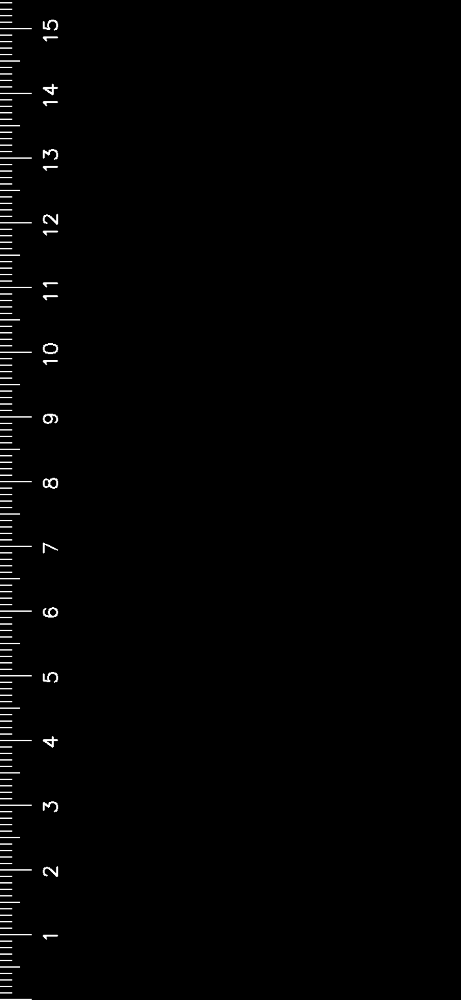
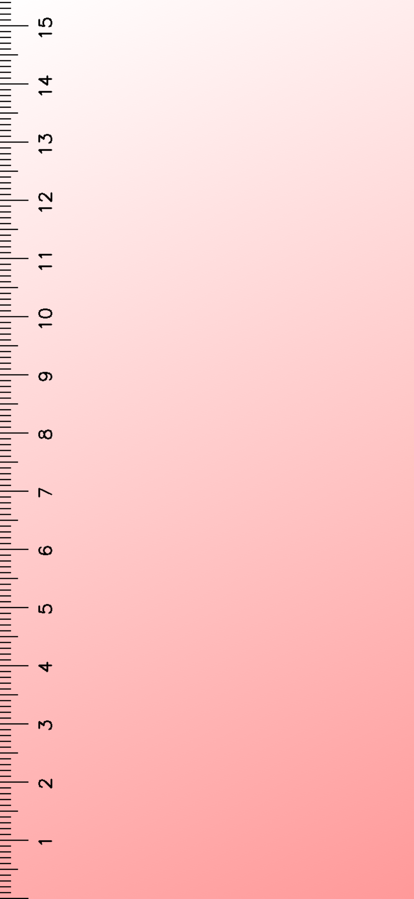
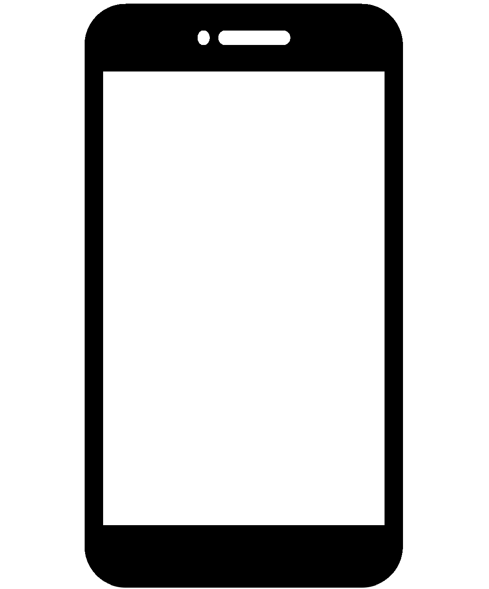
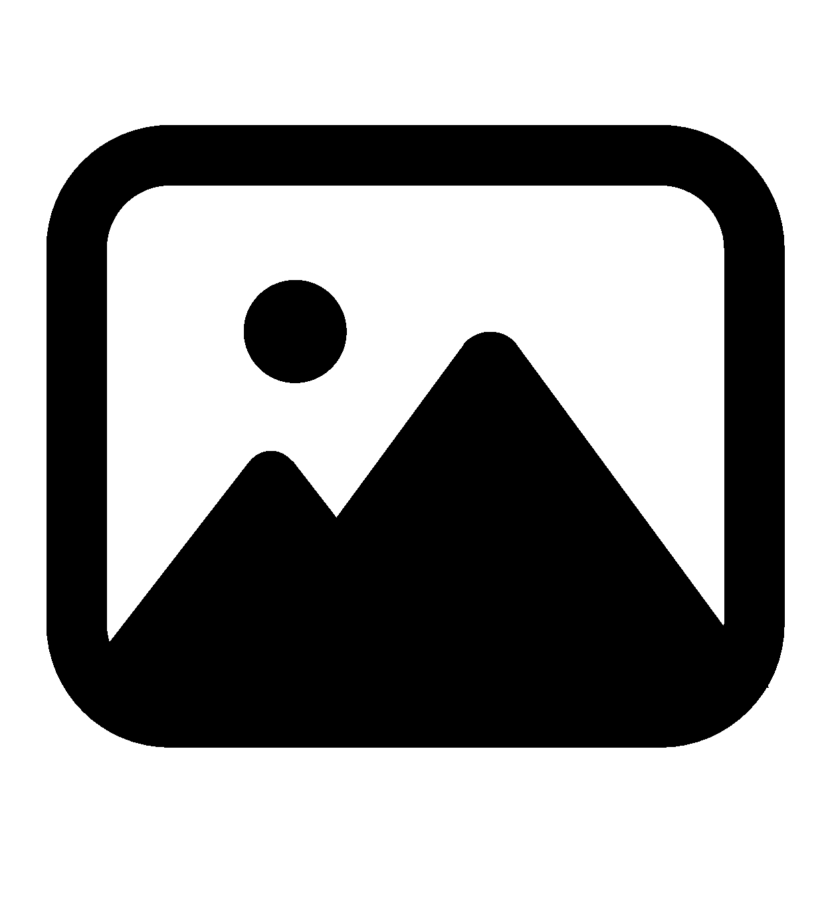
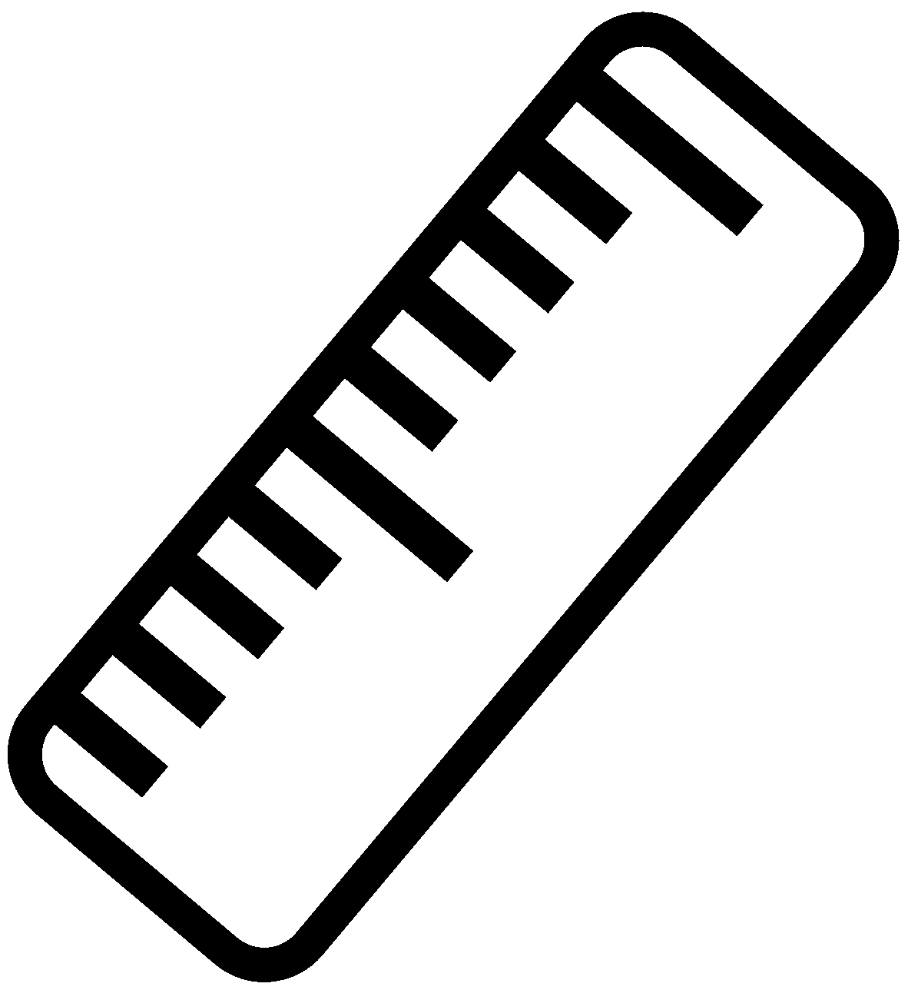
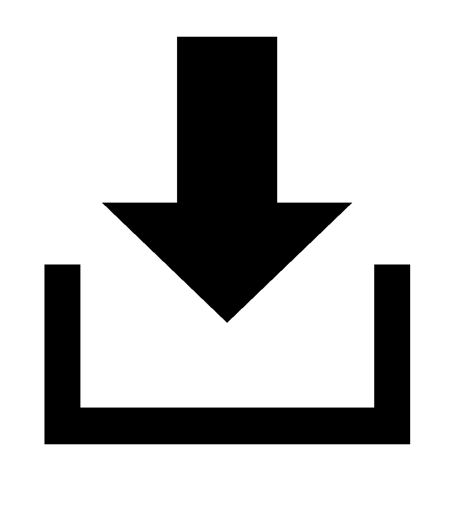

Free tool to create full-size ruler wallpaper for standby screens
You can turn your standby screen into a full-size ruler for free.
You can download an image of your choice with the ruler's scale superimposed on it.
(Safari is recommended for iOS.)



Treatment

①Device Selection
Select the device to which you want to set the wallpaper.
*If there is no applicable device, select "Other/Custom" in "Model name" and enter the screen size and other information manually.

②Wallpaper Selection
Select the image/color to be used for the wallpaper.

③Ruler Settings
Adjust the borders, colors, etc. so that the scale is easy to read.

④Download
Download the completed image.